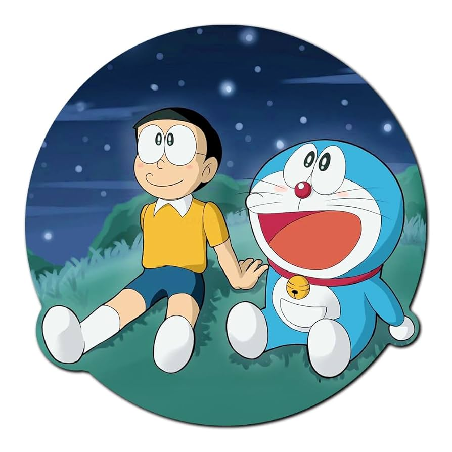

Doraemon (ドラえもん) is a Japanese manga series written and illustrated by Fujiko F. Fujio [ja]. First serialized in 1969, the manga's chapters were collected in 45 tankōbon volumes published by Shogakukan from 1974 to 1996. The story revolves around an earless robotic cat named Doraemon, who travels back in time from the 22nd century to assist a boy named Nobita Nobi in his day-to-day life.
Doremon's one of the funniest video
doremon's Audio